Exhaust refers to the system responsible for guiding and expelling the gases produced during the combustion process in the engine.
This system plays a crucial role in managing and directing the by-products of combustion away from the engine and out of the vehicle.
The primary components of the exhaust system include the exhaust manifold, catalytic converter, muffler, and tailpipe.
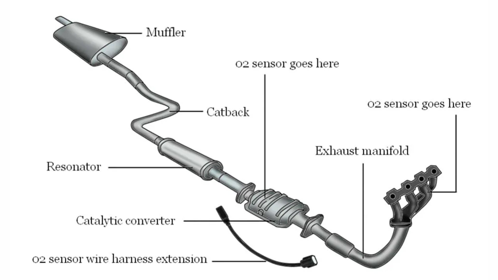
1.Exhaust Manifold: The exhaust manifold collects exhaust gases from the engine's cylinders and channels them into a single pipe
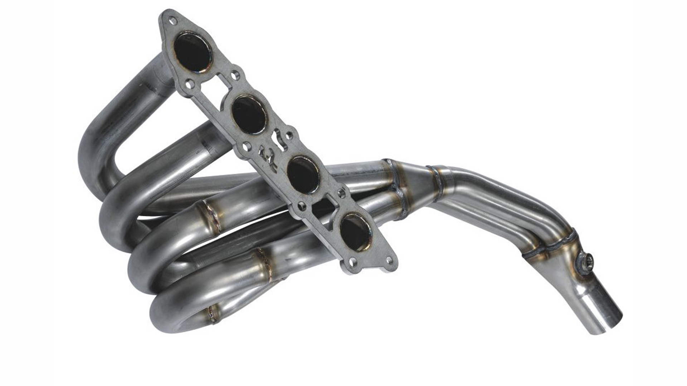
2.Catalytic Converter: Converts harmful pollutants in the exhaust gases (such as carbon monoxide, nitrogen oxides, and hydrocarbons) into
less harmful substances through chemical reactions. Crucial for reducing air pollution and meeting emission standards.
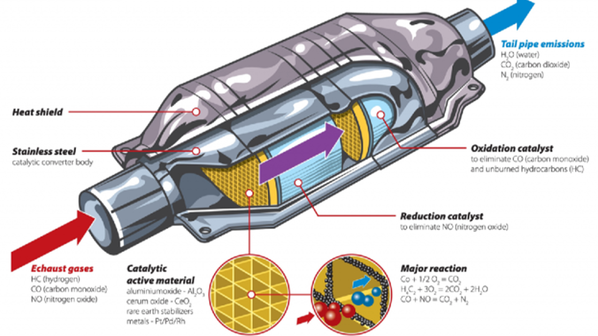
3.Muffler (Silencer): Reduces noise produced by the high-pressure exhaust gases leaving the engine. It contains baffles and
sound-absorbing materials to dampen sound waves
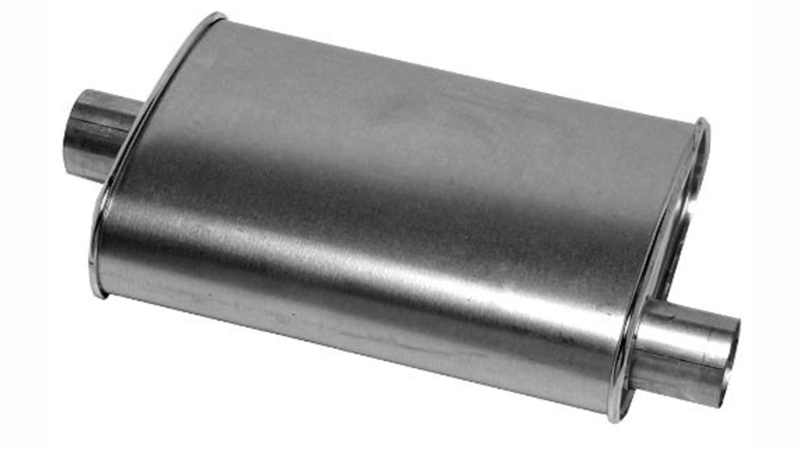
4.Resonator: A resonator in an exhaust system is a component designed to modify and control the sound produced by the engine's
exhaust gases as they exit the vehicle. It is typically a cylindrical chamber connected to the exhaust pipe, positioned after
the catalytic converter and before the muffler
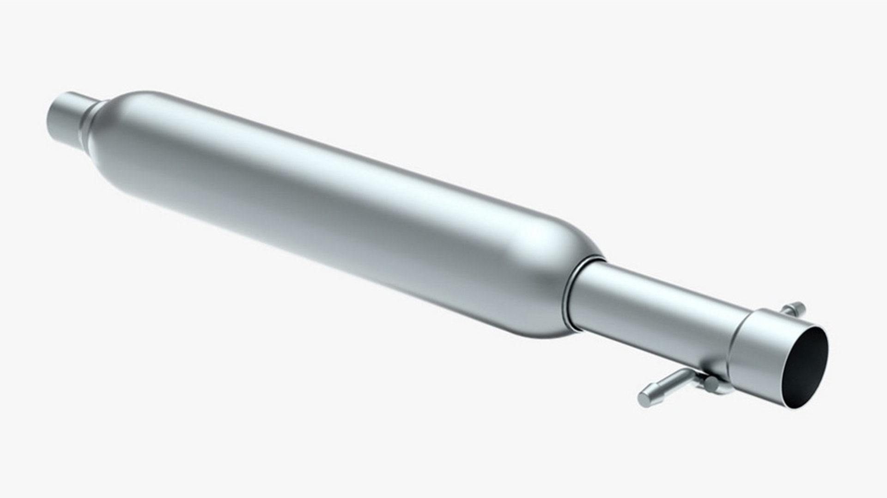
5.Tailpipe: Guides the treated exhaust gases out of the vehicle and releases them into the atmosphere
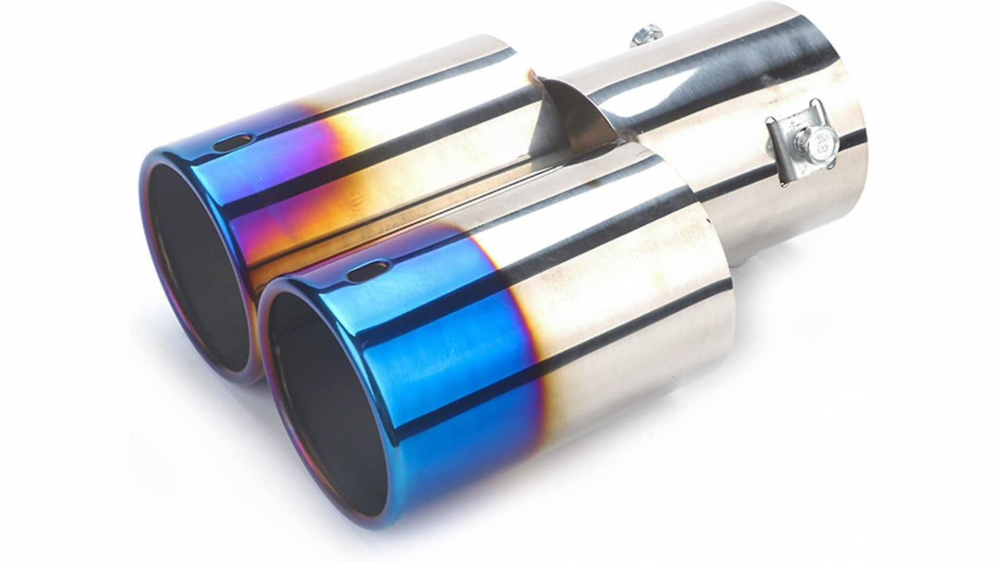
Different Types
- Stock Exhausts: Original equipment exhaust system provided by the manufacturer. Generally designed for efficiency, compliance, and a quiet ride
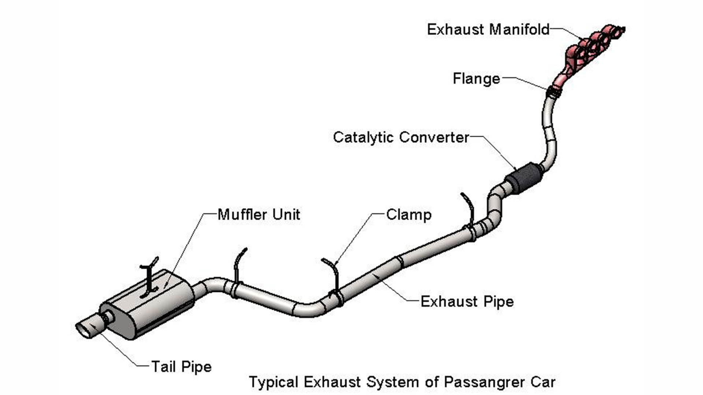
- Cat-back exhaust: Replaces the exhaust system from the catalytic converter to the tailpipe, enhancing performance and sound without modifying
the catalytic converter.
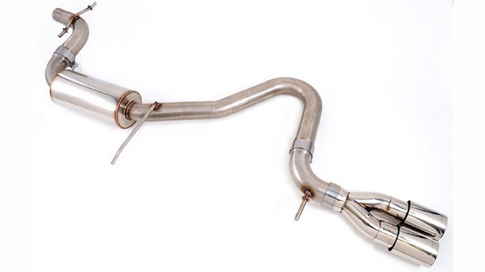
- Axle-Back exhaust: Replaces the exhaust components from the rear axle to the tailpipe, offering a more customizable option for sound and
appearance
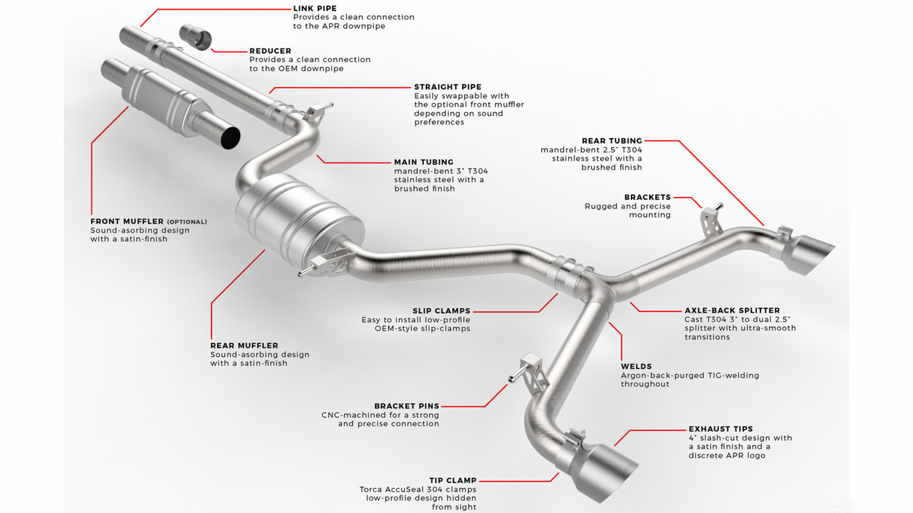
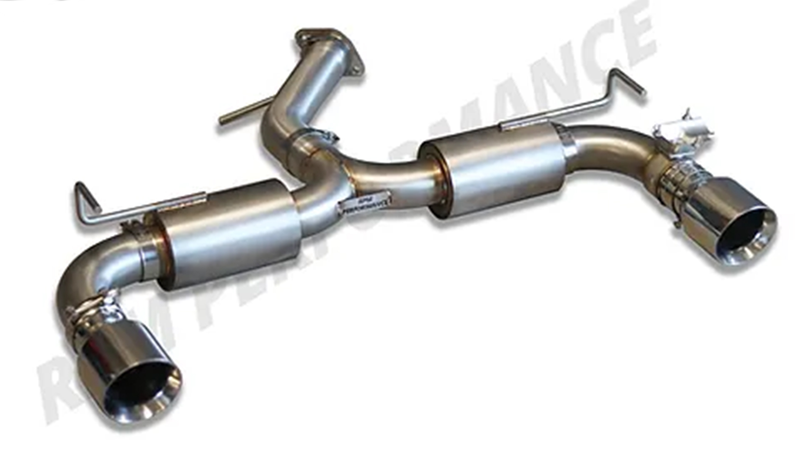
- Turbo-Back exhaust: Replaces the exhaust system from the turbocharger to the tailpipe in turbocharged vehicles, optimizing performance
and sound
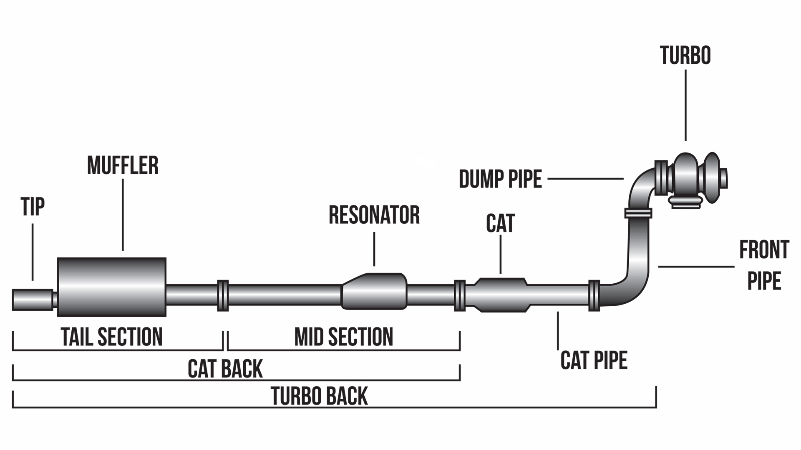
- Straight Piping: A modification where the exhaust gases flow directly through pipes without the use of mufflers, resonators,
or catalytic converters.Typically chosen for increased performance and a louder exhaust note
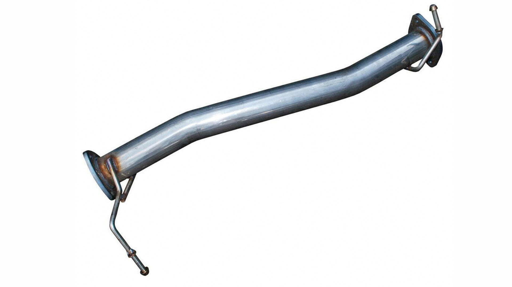
- Downpipe: The modification of the section of the exhaust system that connects the turbocharger's outlet to the rest of the exhaust system.
Upgrading the downpipe can improve exhaust flow, reduce turbo lag, and enhance overall turbocharged engine performance